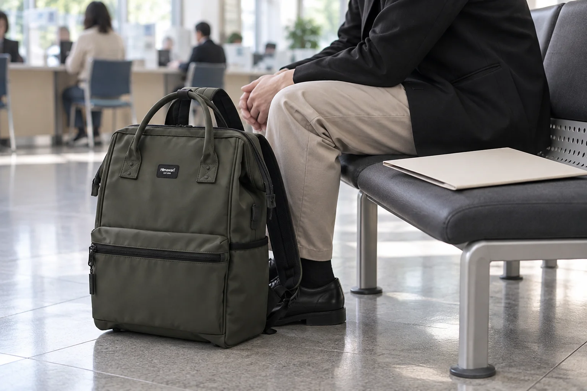

주민센터에서 서류를 받는 날: 가방 속 종이의 앞뒤를 정하기

동네 주민센터에 서류를 발급받으러 가는 짧은 외출에도 손에 남는 종이가 생깁니다. 번호표, 신청 과정에서 받은 안내, 발급받은 문서를 모두 같은 앞주머니에 넣으면 집에서 다시 확인할 때 섞이기 쉽습니다. 가방의 포켓 수보다 중요한 것은 방문 전 준비물과 받은 뒤의 문서가 서로 다른 방향으로 움직인다는 점입니다. 필요한 서류와 수수료, 운영 시간은 방문하려는 기관의 최신 안내를 기준으로 확인하고 가방 안의 자리는 그다음에 정해보세요.
방문처 안내와 실제 필요한 것만 대조합니다
어떤 민원을 보느냐에 따라 신분 확인과 신청 방법, 발급 수단이 달라질 수 있습니다. 인터넷에서 본 오래된 준비물 목록을 그대로 옮기기보다 해당 주민센터나 공식 서비스의 안내를 확인하세요. 준비가 끝나면 보여줄 물건과 개인적으로 들고 갈 물건을 나눕니다. 필요하지 않은 개인정보 문서까지 혹시 몰라 여러 장 챙기면 가방 안에서 관리할 종이만 늘어납니다.
받을 종이를 위한 빈 파일을 준비합니다
발급받은 종이의 크기를 알 수 있다면 그보다 작지 않은 불투명한 파일이나 봉투를 하나 준비해 두세요. 반듯하게 넣을 수 있는 자리인지 평소 짐을 담은 가방에서 확인합니다. 문서가 접히거나 한쪽 모서리가 눌릴 수 있는 자리라면 다른 위치로 옮깁니다. 백팩 자체에 문서 보호 기능이 있다고 가정하지 말고, 필요한 상태를 유지할 포장과 가방 안의 빈 공간을 함께 생각하세요.
대기 공간에서는 가방을 필요한 만큼만 엽니다
번호표나 신분 확인에 필요한 물건은 안내에 따라 제시하고, 다른 문서가 함께 보이지 않도록 한 번에 꺼낼 것만 손에 듭니다. 신청서를 작성할 때는 가방을 통로에 펼쳐두지 않고 다른 사람의 이동에 방해되지 않는 자리를 찾으세요. 개인 정보가 적힌 종이를 의자 위나 창구 주변에 놓아두지 않도록, 사용한 뒤에는 손에 쥐거나 닫힌 파일에 다시 넣습니다.
발급 직후에는 장수보다 내용을 먼저 확인합니다
받은 문서는 그 자리에서 이름과 신청한 종류 등 필요한 항목이 맞는지 안내에 따라 확인하세요. 오류가 있다면 현장에서 담당자에게 문의하는 편이 집에 와서 다시 방문하는 일을 줄일 수 있습니다. 확인이 끝난 뒤에는 문서가 바깥에서 보이지 않게 준비한 파일에 넣고, 구겨지기 쉬운 다른 물건과 떨어뜨려 둡니다. 번호표나 임시 안내문은 필요한 보관 여부를 판단한 뒤 별도로 챙깁니다.
귀가 후에는 임시 종이를 비웁니다
가방에서 문서 파일을 꺼내 보관할 위치로 옮기고, 임시로 넣어 둔 안내문과 번호표를 다시 살펴보세요. 개인 정보가 있는 종이를 버려야 한다면 그대로 밖에 노출하지 말고 적절한 방법으로 처리합니다. 대표 사진은 실제 Himawari No.1884 카키 제품을 참조해 만든 AI 연출 이미지입니다. 사진 속 파일과 대기 공간은 연출이며 제품 구성품이나 개인정보 보호 성능을 뜻하지 않습니다.
참고·안내
- Himawari No.1884 제품 정보
- 실제 Himawari No.1884 카키 제품을 참조한 AI 연출 이미지입니다. 대기 공간과 불투명 파일은 연출 소품이며 실제 기관 이용 기록이 아닙니다.
자주 묻는 질문
발급받은 서류를 백팩 앞주머니에 넣어도 되나요?
문서가 접히거나 밖에서 보일 수 있는지 먼저 확인하세요. 크기에 맞는 불투명한 파일에 넣어 반듯한 자리를 찾는 편이 좋습니다.
방문 준비물은 이 글의 목록만 따르면 되나요?
아닙니다. 민원 종류와 방문처에 따라 달라질 수 있으므로 해당 기관의 최신 공식 안내를 확인하세요.